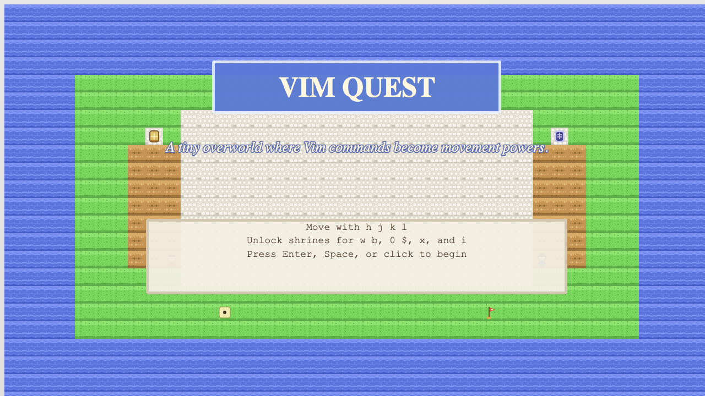
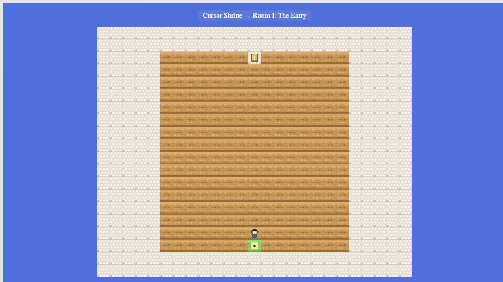
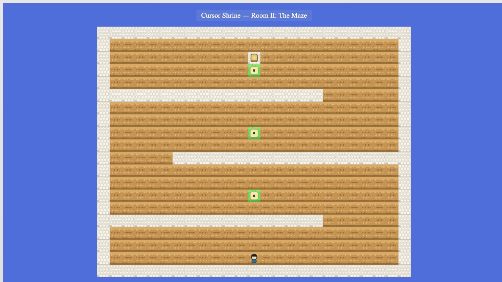
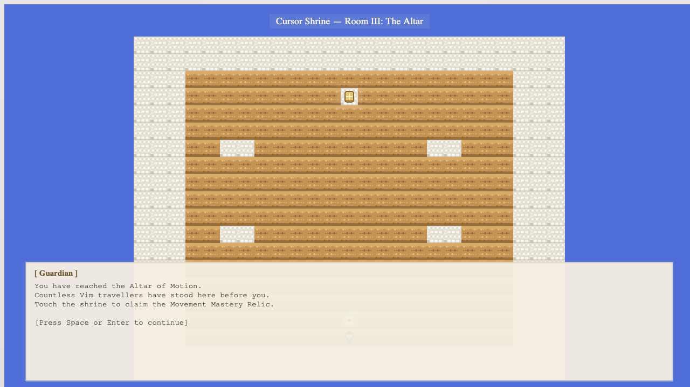
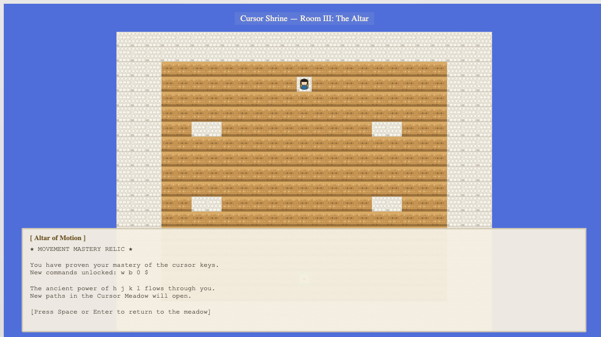
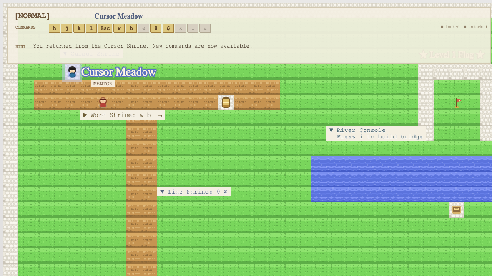

What Was Verified
- Entering the cave from the overworld transitions into the dungeon scene.
- Room I marker advances to Room II.
- Room II altar advances to Room III.
- Room III altar grants the relic and does not auto-exit.
- Stepping on the exit portal returns to an awake overworld (and avoids immediate re-entry).
Key Finding
Gotcha
Dungeon dialogues pause update(), so tile triggers won’t fire until the dialogue is closed.
- This matters most on first dungeon entry and on Room III intro / relic dialogue.
- Automation needs to close dialogue boxes (equivalent to pressing
Space/Enter).
Automation Notes
- Script:
scripts/cave-playthrough.mjs - Run:
VQ_URL=http://127.0.0.1:8080/ node scripts/cave-playthrough.mjs -
The script uses deterministic teleports to key tiles (marker/altar/exit) to validate state transitions and
avoid flaky pathfinding. If you want “real movement” validation, add a second script that drives
h/j/k/lthrough the maze over time.
Screenshots






Applied Improvements
- Room II now shows a concrete route hint after the first checkpoint: “Right gap, left gap, right gap.”
- The current dungeon objective now has a subtle pulsing glow on the marker, altar, or exit tile.
- Dev builds now expose a tiny debug helper on
window.__vqDebugfor tile-precise automation.